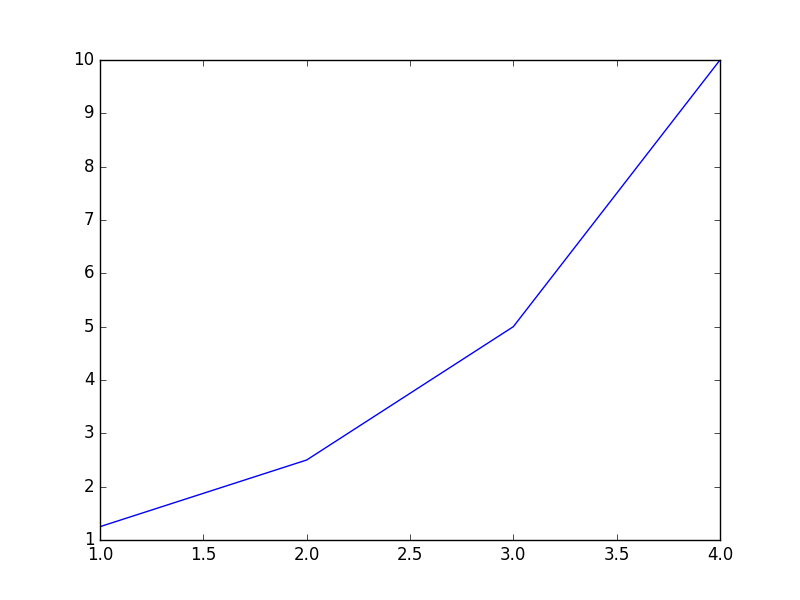
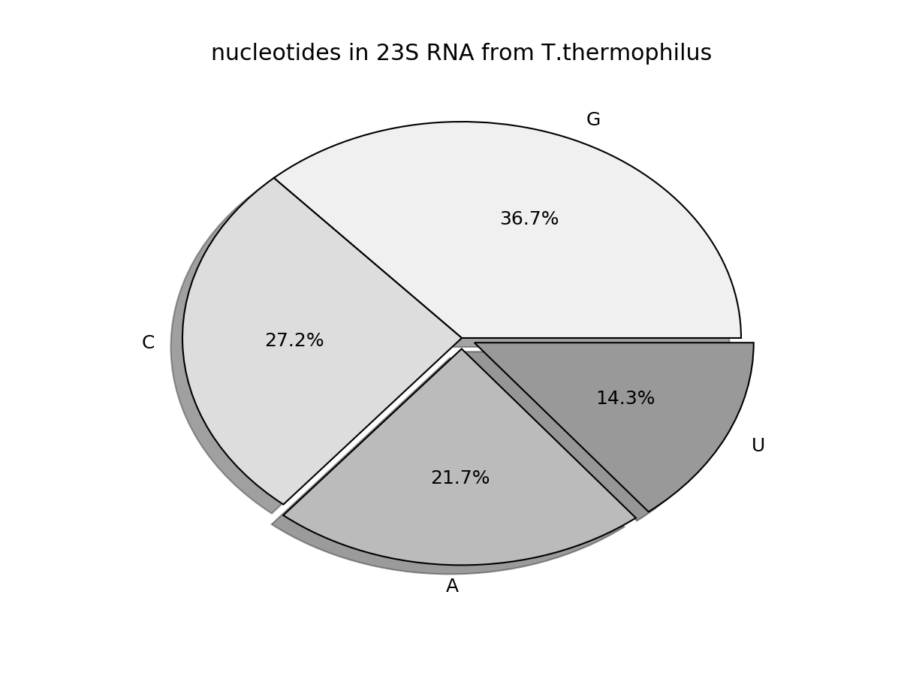
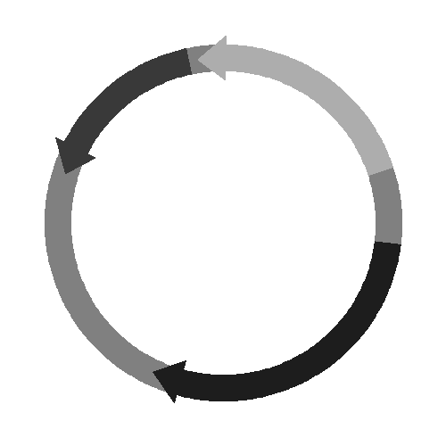

- Part 1, Getting Started
- Chapter 1, The Python Shell and Basics
- Chapter 2, Your First Python Program
- Part 2, Data management
- Chapter 3, Analyzing a Data Column
- Chapter 4, Parsing Data Records
- Chapter 5, Searching Data
- Chapter 6, Filtering Data
- Chapter 7, Managing Tabular Data
- Chapter 8, Sorting Data
- Chapter 9, Pattern Matching and Text Mining
- Part 3, Modular Programming
- Chapter 10, Divide a Program into Functions
- Chapter 11 Managing Complexity with Classes
- Chapter 12 Debugging
- Chapter 13, Using External Modules, The Python Interface to R
- Chapter 14, Building Program Pipelines
- Chapter 15, Writing Good Programs
- Part 4, Data Visualization
- Chapter 16, Creating Scientific Diagrams
- Chapter 18, Manipulating Images
- Part 6, Cookbook
- Recipe 2, Reversing and Randomizing a Sequence
- Recipe 3, Creating a Random Sequence with Probabilities
Foreword
Notes and code snippets. Python 2. The book comes with files and cases. Python 2. From CRC Press, 2014.
Part 1, Getting Started¶
Chapter 1, The Python Shell and Basics¶
Data structure
- Booleans:
TrueorFalse. - Dictionaries: unordered collections of key-value pairs; both can be numbers or strings; indicated with
{key1: value1, 'key2': 'value2'}. - Floats: numbers with digits after the dicemal point,
- Integers: numbers without digits after the decimal point.
- Lists: mutable ordered collections of objects; indicated with
[a, b, c]. - Sets: immutable unordered collections of unique elements; indicated by
([a, b, c]). - Strings: immutable ordered collections of characters; indicated with
'single'or"double"quotation marks. - Tuples: immutable ordered collections of objects; indicated with
(a, b, c).
Conversions
Convert or coerce data:
- float(value); into a float.
- int(value); into an integer.
- str(value); into a string.
Strings
'Single' and "double" quotes are for short strings.
’‘’Triple single and double quotes
are rather multilines.’‘’
Access character and substrings
print s[-1]; print the last character of a string.print s[-5:]; print from the 5th position from the end to the end.
String functions
len(s); length of the string,s.upper(); convert to uppercase.s.lower(); convert to lowercase.s.strip(); remove white spaces and tabs from both ends.s.strio('m'); remove'm'from both ends.s.rstrip(); remove on the right only.s.lstrip('m'); remove on the left only.s.split(' '); cut into words where there is space.s.find('m'); search for the'm'substring and return the starting position.s.replace('m', 'n'); replace'm'with'n'.s.startwith('m'); check beginning and returnTrueorFalse.s.endwith('m'); check end and returnTrueorFalse.
Create lists
data = [1, 2, 3, 4, 5].data[1:3];[2, 3].data[0:2];[1, 2].data[:3];[1, 2, 3].data[-2:];[4, 5].data2 = data[:]; create a copy.
Modify lists
l[i] = x; replace the ith element withx.l[i;j] = t; replace elements fromitojbyt(iterable).del l[i;j]; delete the elements of the list fromitoj.del s[i;k;k]; delete the elements of the list fromitojwith stopk.l.append(x); add elementxto the list.l.extend(x); add several elementxto the list (iterable).l.count(x); return the number of elementsxin the list.l.index(x[. i[. j]]); return the smallerksuch thatl[k] = xandi <= k <= j.l.insert(i.x); insert(wedge in)x.l.pop(i); cancel the ith element and return its value;l.pop()does it for the last element.l.remove(x); delete a choosenxelement.l.reverse(); reverse the list order.l.sort(); sort the list.l.sort([cmp[. key[. reverse]]]); sort the list;cmpis a customized function for the comparison of element pairs that must return a negative value, zero, or a positive value depending on if the first element of the pair is lower than. equal to. or greater than the second element.sorted(l); create a new list made of a simple ascending sort of the list without modifying the list.
Functions working of lists
len(data); length of the list.min(data); smallest.max(data); largest.sum(data); sum.range(4); create a list of number from 0 to 3.range(1.5); create a list of number from 1 to 4.range(2.9.2); create[2, 4, 6, 8].range(5, 0, -1); create[5, 4, 3, 2, 1]
Tuples
t = 1, 2, 3ort = (1, 2, 3)t = 1ortuple = (1,)
Accessing data in dictionaries
prices['banana']; return the value of the key.prices.get('banaba'); do the same thing, but if the key does not exit, it returnsNone.prices.has_key('apple'); check whether the key(s) is(are) defined.prices.keys(); return a list of all keys.prices.values(); return a list of all values.prices.items(); return all keys and values as a list of tuples.
Modifying dictionaries
prices['kiwi'] = 0.6; set the value of the key.prices.setdefault('egg', 0.9); set the value of the key if it is not yet defined.
None
None indicate the object or part of it is empty. For example:
- a = None.
- b = [None, None, 'green'].
Chapter 2, Your First Python Program¶
Difference between functions and methods
Functions are generic; use them anywhere without constraints. For example, len() works on all data.
>>> len('protein')
7
>>> len('111')
3
Other funtions, called methods, are specific; use them on a certain type of data. For example, count() works only for strings or a ‘string’ variable (below, protein is a string).
>>> 'protein'.count('r')
1
>>> 'occurence'.count('c')
3
Count the occurrence of each amino acid in a protein sequence
count, element, in, string
insulin = "GIVEQCCTSICSLYQLENYCNFVNQHLCGSHLVEALYLVCGERGFFYTPKT"
for amino_acid in "ACDEFGHIKLMNPQRSTVWY":
number = insulin.count(amino_acid)
print amino_acid, number
Create a random DNA sequence of length 10
import random
alphabet = "AGCT"
sequence = ""
for i in range(10):
index = random.randint(0, 3)
sequence = sequence + alphabet[index]
print sequence
Part 2, Data management¶
Chapter 3, Analyzing a Data Column¶
Read from a text file
readlines().
text_file = open('neuron_data.txt', 'r')
# 'r' is facultative
lines = text_file.readlines()
text_file.close()
print lines
read().
text_file = open('neuron_data.txt')
# 'r' is facultative
print text_file.read()
text_file.close()
Difference between read() and readlines()
read(x); read up to x bytes in a file. If you don’t supply the size, it reads the entire file. The output is displayed as strings only once.- One character = 1 byte.
- Close and reopen the file to read it again.
readlines(x); read up to x bytes. If you don’t supply a size, it reads all the data until it reaches a newline (\n) or the end of a paragraph.- Close and reopen the file to read it again.
Write a text file
output_file = open('counts.txt', 'w')
# 'w' is mandatory
output_file.write('number of neuron lengths: 7\n')
output_file.close()
Clean a text file
strip
strip(); removes blanks spaces.rstrip(); right only.lstrip(); left only.
output_file = open('counts.txt')
output_file.read()
output_file.close()
# vs
output_file = open('counts.txt')
output_file.read().strip()
output_file.close()
Write and then read the same file
'r'; cannot write with, only reads.'w'; cannot read with, only writes (an existing file with the same name will be erased).'a'append; data added to the end.'r+'; both read and write (by replacing the existing string at the beginning by the new string).
file1 = open('count.txt','w')
file1.write('this is just a dummy test\n')
file1.close()
file2 = open('count.txt', 'r')
print file2.read()
file2.close()
file3 = open('count.txt','a')
file3.write('this is another test\n')
file3.close()
file4 = open('count.txt', 'r')
print file4.read()
file4.close()
file5 = open('count.txt', 'w')
file5.write('this is a final test\n')
file5.close()
file6 = open('count.txt', 'r')
print file6.read()
file6.close()
Read a series of numbers from a text file and print a summary of the data
strip, append, length, minimum, maximum, sort, format, integer, float
strip(); remove blank spaces.- A text is string by default even thought the file contains numbers; transform the text into float.
append(); each line to a list.len(data).sum(data).min(data).max(data).sort().%4iis an integer with 4 digits.%6.1fis a float with 6 digits and 2 decimals.
data = []
for line in open('neuron_data.txt'):
length = float(line.strip())
data.append(length)
n_items = len(data)
total = sum(data)
shortest = min(data)
longest = max(data)
data.sort()
output = open("results.txt","w")
output.write("number of dendritic lengths : %4i \n"%(n_items))
output.write("total dendritic length : %6.1f \n"%(total))
output.write("shortest dendritic length : %7.2f \n"%(shortest))
output.write("longest dendritic length : %7.2f \n"%(longest))
output.write("%37.2f\n%37.2f"%(data[-2], data[-3]))
output.close()
Format the data
formatting, variable
%s; a string.%d; a digit.%r; raw data.%10s; left-justify by 10 bytes.%-10s; right-justify. by bytes%i; an integer.%f; a float.%2f; a float with 2 digits.%2.2f; has 2 digits and 2 decimals.%2i; has 2 digits.- And so on.
str(); turn a variable into a string (digit3to string'3'for example).int(); turn a variable into an integer (string'3'to digit3for example).float(); turn a variable into a float (digit3to3.0for example).
file1 = open('count.txt','w')
file1.write('this is just a dummy test')
file1.close()
file2 = open('count.txt', 'r')
variable = file2.read()
print "Test1: %r" % (variable)
print "Test2: %s" % (variable)
print "Test3: %30s" % (variable)
print "Test4: %-30s" % (variable)
print "Test5: %30r" % (variable)
print "Test6: %-30r" % (variable)
print "Test7: %d, %d, %d" % (1, 2, 3)
print "Test8: %2d, %3d, %10d" % (1, 2, 3)
print "Test9: %d, %i, %f" % (1, 2, 3)
print "Test10: %i, %i, %i" % (1, 2.8, 3.1416)
print "Test11: %2i, %5i, %10i" % (1, 2.8, 3.1416)
print "Test12: %f, %f, %f" % (1, 2.8, 3.1416)
print "Test13: %2f, %2.2f, %10.3f" % (1, 2.8, 3.1416)
print "Test14: %2f, %2f, %2f" % (0.11, 10.111, 1000.1111)
print "Test15: %2.1f, %2.1f, %2.10f" % (0.11, 10.111, 1000.1111)
file2.close()
Output:
Test1: 'this is just a dummy test'
Test2: this is just a dummy test
Test3: this is just a dummy test
Test4: this is just a dummy test
Test5: 'this is just a dummy test'
Test6: 'this is just a dummy test'
Test7: 1, 2, 3
Test8: 1, 2, 3
Test9: 1, 2, 3.000000
Test10: 1, 2, 3
Test11: 1, 2, 3
Test12: 1.000000, 2.800000, 3.141600
Test13: 1.000000, 2.80, 3.142
Test14: 0.110000, 10.111000, 1000.111100
Test15: 0.1, 10.1, 1000.1111000000
Write a list of numbers to a text file
data = [16.38, 139.90, 441.46, 29.03, 40.93, 202.07, 142.30, 346.00, 300.00]
out = []
for value in data:
out.append(str(value) + '\n')
open('results.txt', 'w').writelines(out)
Ouput:
16.38
139.9
441.46
29.03
40.93
202.07
142.3
346.0
300.0
Calculate the average from a list of numbers
# calculate average from float numbers
data = [3.53, 3.47, 3.51, 3.72, 3.43]
average = sum(data) / len(data)
print average
# calculate average from integer numbers
data = [1, 2, 3, 4]
average = float(sum(data)) / len(data)
print average
Calculate the median from a list of numbers
data = [3.53, 3.47, 3.51, 3.72, 3.43]
data.sort()
mid = len(data) / 2
if len(data) % 2 == 0:
median = (data[mid - 1] + data[mid]) / 2.0
else:
median = data[mid]
print median
Join or concatenate a list
>>> L = ['1', '2', '3']
>>> '+'.join(L)
'1+2+3'
>>> L = ['a', 'b', 'c']
>>> ''.join(L)
'abc'
>>> L = ['1', '2', '3']
>>> int(''.join(L))
123
Calculate (a variance and )a standard deviation from a list of numbers
import math
data = [3.53, 3.47, 3.51, 3.72, 3.43]
average = sum(data) / len(data)
total = 0.0
for value in data:
total += (value - average) ** 2
variance = total / len(data) # population variance
stddev = math.sqrt(variance) # population stddev
print variance
print stddev
Chapter 4, Parsing Data Records¶
Find items common to two lists
# proteins participating in cell cycle
list_a = []
for line in open("cell_cycle_proteins.txt"):
list_a.append(line.strip())
print list_a
# proteins expressed in a given cancer cell
list_b = []
for line in open("cancer_cell_proteins.txt"):
list_b.append(line.strip())
print list_b
for protein in list_a:
if protein in list_b:
print protein, 'detected in the cancer cell'
else:
print protein, 'not observed'
Output:
['P62258', 'P61981', 'P62191', 'P17980', 'P43686', 'P35998', 'P62333', 'Q99460', 'O75832']
['P43686', 'P62333']
P62258 not observed
P61981 not observed
P62191 not observed
P17980 not observed
P43686 detected in the cancer cell
P35998 not observed
P62333 detected in the cancer cell
Q99460 not observed
O75832 not observed
**Find if two or more conditions are met
boolean, operators, and, or, not
seq = "MGSNKSKPKDASQRRRSLEPAENVHGAGGGAFPASQTPSKPASADGHRGPSAAFAPAAAE"
if 'GGG' in seq and 'RRR'in seq:
print 'GGG is at position: ', seq.find('GGG')
print 'RRR is at position: ', seq.find('RRR')
if 'WWW' in seq or 'AAA' in seq:
print 'Either WWW or AAA occur in the sequence'
if 'AAA' in seq and not 'PPP' in seq:
print 'AAA occurs in the sequence but not PPP'
Boolean Operators
| Condition | Meaning |
|---|---|
| A < B | A lower than B |
| A <= B | A lower than or equal to B |
| A > B | A greater than B |
| A >= B | A greater than or equal to B |
| A == B | A equal to B |
| A != B | A different from B |
| A<> B | idem |
| A is B | A is the same thing as B ‘thing’ being an object |
| A is not B | A is not the same thing as B |
| A in B | A is present in the sequence B |
| A not in B | A is not present in the sequence B |
Find all prime numbers under 30
for i in range(30):
if i < 4:
print "prime number:", i
elif i % 2 == 0:
print "multiple of two:", i
elif i % 3 == 0:
print "multiple of three:", i
elif i % 5 == 0:
print "multiple of five:", i
else:
print "prime number:", i
List vs Tuple vs Set
- mutable: change, replace, reorder, add elements.
List = [1, 2, 3]; mutable sequences of objects.Tuple = (1, 2, 3); immutable ordered sequences of objects;.Set = set([1, 2, 3]); immutable unordered collections of unique elements.- The three can contain digits, strings or other objects (embedded).
More on lists
List[0]; extractLlist = [[1, 2, 3],[a, b, c],[x, 4, 'text'], 'seq']; embedded lists.List[0][1]; extract from embedded lists.List.append(5); add.- Create:
range(3).seq(0, 2, 1).[0.0] * 10.[x**2 for x in range(5)].
Creating a list with a one-line loop
loop, conditional, conditional, on one line
# remove non-base symbols from a sequence
squares = [x**2 for x in range(5)]
print squares
bases = ['A', 'C', 'T', 'G']
print bases
seq = 'GGACXCAGXXGATT'
print seq
seqlist = [base for base in seq if base in bases]
print seqlist
Write all headers from a file to a separate file
fasta_file = open('SwissProt.fasta','r')
out_file = open('SwissProt.header','w')
for line in fasta_file:
if line[0:1] == '>':
out_file.write(line)
out_file.close()
Reads all AC numbers from the deflines of a file
parse, parsing, text, file
input_file = open("SwissProt.fasta","r")
ac_list = []
for line in input_file:
if line[0] == '>':
fields = line.split('|')
ac_list.append(fields[1])
print ac_list
Output:
['P31946', 'P62258', 'Q04917', 'P61981', 'P31947', 'P27348', 'P63104', 'P30443']
Read a file (genbank_file) and convert it to another file (output_file)
genbank_file = open("AY810830.gb")
output_file = open("AY810830.fasta","w")
flag = False
for line in genbank_file:
if line[0:9] == 'ACCESSION':
accession = line.split()[1].strip()
output_file.write('>' + accession + '\n')
if line[0:6] == 'ORIGIN':
flag = True
elif flag:
fields = line.split()
if fields != []:
seq = ''.join(fields[1:])
output_file.write(seq.upper() + '\n')
genbank_file.close()
output_file.close()
Read multiple files and extract data
fasta_file = open('SwissProt.fasta','r')
out_file = open('SwissProtHuman.fasta','w')
seq = ''
for line in fasta_file:
if line[0] == '>' and seq == '':
# process the first line of the input file
header = line
elif line [0] != '>':
# join the lines with sequence
seq = seq + line
elif line[0] == '>' and seq != '':
# in subsequent lines starting with '>',
# write the previous header and sequence
# to the output file. Then re-initialize
# the header and seq variables for the next record
if "Homo sapiens" in header:
out_file.write(header + seq)
seq = ''
header = line
# take care of the very last record of the input file
if "Homo sapiens" in header:
out_file.write(header + seq)
out_file.close()
Chapter 5, Searching Data¶
Translate a RNA sequence to a protein sequence in three reading frames
dictionary
codon_table = {
'GCU':'A', 'GCC':'A', 'GCA':'A', 'GCG':'A', 'CGU':'R', 'CGC':'R',
'CGA':'R', 'CGG':'R', 'AGA':'R', 'AGG':'R', 'UCU':'S', 'UCC':'S',
'UCA':'S', 'UCG':'S', 'AGU':'S', 'AGC':'S', 'AUU':'I', 'AUC':'I',
'AUA':'I', 'UUA':'L', 'UUG':'L', 'CUU':'L', 'CUC':'L', 'CUA':'L',
'CUG':'L', 'GGU':'G', 'GGC':'G', 'GGA':'G', 'GGG':'G', 'GUU':'V',
'GUC':'V', 'GUA':'V', 'GUG':'V', 'ACU':'T', 'ACC':'T', 'ACA':'T',
'ACG':'T', 'CCU':'P', 'CCC':'P', 'CCA':'P', 'CCG':'P', 'AAU':'N',
'AAC':'N', 'GAU':'D', 'GAC':'D', 'UGU':'C', 'UGC':'C', 'CAA':'Q',
'CAG':'Q', 'GAA':'E', 'GAG':'E', 'CAU':'H', 'CAC':'H', 'AAA':'K',
'AAG':'K', 'UUU':'F', 'UUC':'F', 'UAU':'Y', 'UAC':'Y', 'AUG':'M',
'UGG':'W',
'UAG':'STOP', 'UGA':'STOP', 'UAA':'STOP'
}
# read the RNA sequence into a single string
rna = ''
for line in open('A06662-RNA.fasta'):
if not line.startswith('>'):
rna = rna + line.strip()
# translate one frame at a time
for frame in range(3):
prot = ''
print 'Reading frame ' + str(frame + 1)
for i in range(frame, len(rna), 3):
codon = rna[i:i + 3]
if codon in codon_table:
if codon_table[codon] == 'STOP':
prot = prot + '*'
else:
prot = prot + codon_table[codon]
else:
# handle too short codons
prot = prot + '-'
# format to blocks of 48 columns
i = 0
while i < len(prot):
print prot[i:i + 48]
i = i + 48
Output (contains a translated sequence for each reading frame):
Reading frame 1
WDQSAEAACVRVRVRVCACVCVRLHLCRVGKEIEMGGQ*AQVPKALNP
LVWSLLRAMGAIEKSEQGCV*M*GLEGSSREASSKAFAIIW*ENPARM
DRQNGIEMSWQLKWTGFGTSLVVGSKQRRIWDSGGLAWGRRGCLRGWE
G*E*DDTWWCLAGGGQG*LCEGTARATEAF*DPAVPEPGRQDLHCGRP
GEHLA
Reading frame 2
GTSQQRQRVCACVCVCVRVCVYACICVGWVRR*RWAGSRPRSRRP*TH
WFGVS*GQWGPLRSLNRAVSECEV*KDPPEKPALKLLQSSGERTQQGW
TGRME*R*VGS*SGQDLVLAWLWGASRGESGTLVVWPGADGGVSGAGR
DESRMIHGGVWQEAGKDDYVKALPGQLKPFETLLSQNQGGKTFIVGDQ
VSIW-
Reading frame 3
GPVSRGSVCARACACVCVCVCTLAFVSGG*GDRDGRAVGPGPEGLEPT
GLESPKGNGGH*EV*TGLCLNVRSRRILQRSQL*SFCNHLVREPSKDG
QAEWNRDELAAEVDRIWY*PGCGEQAEENLGLWWSGLGQTGVSQGLGG
MRVG*YMVVSGRRRARMTM*RHCPGN*SLLRPCCPRTREARPSLWETR
*ASG-
While loop
seq = "IVGGYTCGANTVPYQVSLNSGYHFCGGSLINSQWVVSAAHCYKSGIQVRLGEDNINVVEGNEQF"
i = 0
while i < len(seq):
print seq[i:i + 12]
i = i + 12
Output:
IVGGYTCGANTV
PYQVSLNSGYHF
CGGSLINSQWVV
SAAHCYKSGIQV
RLGEDNINVVEG
NEQF
Find the a sequence in a file
swissprot = open("SwissProt.fasta")
insulin_ac = 'P61981'
result = None
while result == None:
line = swissprot.next()
if line.startswith('>'):
ac = line.split('|')[1]
if ac == insulin_ac:
result = line.strip()
print result
Output:
>sp|P61981|1433G_HUMAN 14-3-3 protein gamma OS=Homo sapiens GN=YWHAG PE=1 SV=2
Searching a list
search
bases = ['A', 'C', 'T', 'G']
seq = 'CAGGCCATTRKGL'
for i in seq:
if i not in bases:
print i, "is not a nucleotide"
Output:
R is not a nucleotide
K is not a nucleotide
L is not a nucleotide
Read a file and store entries in a dictionary
sequences = {}
ac = ''
seq = ''
for line in open("SwissProt.fasta"):
if line.startswith('>') and seq != '':
sequences[ac] = seq
seq = ''
if line.startswith('>'):
ac = line.split('|')[1]
else:
seq = seq + line.strip()
sequences[ac] = seq
print sequences.keys()
print sequences['P62258']
Output:
['Q04917', 'P63104', 'P27348', 'P31947', 'P31946', 'P30443', 'P61981', 'P62258']
MDDREDLVYQAKLAEQAERYDEMVESMKKVAGMDVELTVEERNLLSVAYKNVIGARRASWRIISSIEQKEENKGGEDKLKMIREYRQMVETELKLICCDILDVLDKHLIPAANTGESKVFYYKMKGDYHRYLAEFATGNDRKEAAENSLVAYKAASDIAMTELPPTHPIRLGLALNFSVFYYEILNSPDRACRLAKAAFDDAIAELDTLSEESYKDSTLIMQLLRDNLTLWTSDMQGDGEEQNKEALQDVEDENQ
Read a sequence from a structure
aa_codes = {
'ALA':'A', 'CYS':'C', 'ASP':'D', 'GLU':'E',
'PHE':'F', 'GLY':'G', 'HIS':'H', 'LYS':'K',
'ILE':'I', 'LEU':'L', 'MET':'M', 'ASN':'N',
'PRO':'P', 'GLN':'Q', 'ARG':'R', 'SER':'S',
'THR':'T', 'VAL':'V', 'TYR':'Y', 'TRP':'W'}
seq = ''
for line in open("1TLD.pdb"):
if line[0:6] == "SEQRES":
columns = line.split()
for resname in columns[4:]:
seq = seq + aa_codes[resname]
i = 0
print ">1TLD"
while i < len(seq):
print seq[i:i + 64]
i = i + 64
Output:
>1TLD
IVGGYTCGANTVPYQVSLNSGYHFCGGSLINSQWVVSAAHCYKSGIQVRLGEDNINVVEGNEQF
ISASKSIVHPSYNSNTLNNDIMLIKLKSAASLNSRVASISLPTSCASAGTQCLISGWGNTKSSG
TSYPDVLKCLKAPILSDSSCKSAYPGQITSNMFCAGYLEGGKDSCQGDSGGPVVCSGKLQGIVS
WGSGCAQKNKPGVYTKVCNYVSWIKQTIASN
Chapter 6, Filtering Data¶
Calculate the intersection of two lists
venn
data_a = [1, 2, 3, 4, 5, 6]
data_b = [1, 5, 7, 8, 9]
a_and_b = []
for num in data_a:
if num in data_b:
a_and_b.append(num)
print a_and_b
Output:
[1, 5]
More about sets
set
Set = set([1, 2, 3]); immutable unordered collections of unique elements.- They are not sequential objects like lists.
- They cannot contain identical elements.
- to remove duplicates
- to calculate the intersection
- the union
- the difference between two or more group of objects
- as long as the order is not important.
- They do not support indexing and slicing operations.
- They take the
inandnot inoperators (test an element for membership in a set).
>>> s1 = set('LDFGJLDFGDGD')
>>> s1
set(['J', 'F', 'L', 'G', 'D'])
>>> 'L' in s1
True
>>> 'Z' not in s1
True
>>> s2 = ('LDF')
>>> s1.issubset(s2)
False
>>> s1.issuperset(s2)
True
>>> s1 = set(['a', 1, 2, 3, 4, 5, 'c', 'b'])
>>> 5 in s1
True
>>> 6 in s1
False
>>> s2 = set([10, 4, 5])
>>> s1.issubset(s2)
False
>>> s1.issuperset(s2)
False
>>> s3 = set((1, 2, 3, 4))
>>> s3
set([1, 2, 3, 4])
>>> s3.add(5)
>>> s3
set([1, 2, 3, 4, 5])
>>> s5 = set([1, 2, 3, 'b', 'c'])
>>> s5
set([1, 2, 3, 'b', 'c'])
>>> s5.update(['a', 'd', 4])
>>> s5
set(['a', 1, 2, 3, 4, 'd', 'c', 'b'])
>>> s1 = set(['a', 'b', 'c'])
>>> s2 = set(['c', 'd', 'e'])
>>> s1.union(s2)
set(['a', 'c', 'b', 'e', 'd'])
>>> s1.intersection(s2)
set(['c'])
>>> s1.symmetric_difference(s2)
set(['a', 'b', 'e', 'd'])
>>> s1.difference(s2)
set(['a', 'b'])
>>> s2.difference(s1)
set(['e', 'd'])
Calculate the intersection of two sets
data_a = set([1, 2, 3, 4, 5, 6])
data_b = set([1, 5, 7, 8, 9])
a_and_b = data_a.intersection(data_b)
print a_and_b
Output:
set([1, 5])
Find numbers common to three sets
reduce() is
a = set((1, 2, 3, 4, 5))
b = set((2, 4, 6, 7, 1))
c = set((1, 4, 5, 9))
triple_set = [a, b, c]
common = reduce(set.intersection, triple_set)
print common
Output:
set([1, 4])
Calculate the differences of two lists
data_a = [1, 2, 3, 4, 5, 6]
data_b = [1, 5, 7, 8, 9]
a_not_b = []
b_not_a = []
for num in data_a:
if num not in data_b:
a_not_b.append(num)
for num in data_b:
if num not in data_a:
b_not_a.append(num)
print a_not_b
print b_not_a
Output:
[2, 3, 4, 6]
[7, 8, 9]
Calculate the differences of two sets 1
data_a = set([1, 2, 3, 4, 5, 6])
data_b = set([1, 5, 7, 8, 9])
a_not_b = data_a.difference(data_b)
b_not_a = data_b.difference(data_a)
print a_not_b
print b_not_a
Output:
set([2, 3, 4, 6])
set([8, 9, 7])
Calculate the differences of two sets 2
data_a = set([1, 2, 3, 4, 5, 6])
data_b = set([1, 5, 7, 8, 9])
a_or_b = data_a.union(data_b)
a_xor_b = data_a.symmetric_difference(data_b)
print a_or_b
print a_xor_b
Output:
set([1, 2, 3, 4, 5, 6, 7, 8, 9])
set([2, 3, 4, 6, 7, 8, 9])
Remove elements from a list
pop(); return and remove the first value.pop(0); return and remove a specific position in the index.
>>> data_a = [1, 2, 3, 4, 5, 6, 7]
>>> data_a.pop()
1
>>> print data_a
[2, 3, 4, 5, 6, 7]
del(); remove a specific position in the index only.
delete
>>> data_a = [1, 2, 3, 4, 5, 6, 7]
>>> del(data_a[1])
>>> print data_a
[1, 3, 4, 5, 6, 7]
remove(); remove a specific element only.
remove
>>> data_a = [1, 2, 3, 4, 5, 6]
>>> data_a.remove(2)
>>> print data_a
[1, 3, 4, 5, 6]
>>> data = [x for x in data_a if x != 3]
Slicing a list
slice, subset
>>> data_a = [1, 2, 3, 4, 5, 6]
>>> data_2 = data_a[:2]
[1, 2]
Remove elements from a dictionary
pop, delete
>>> d = {'a': 1, 'b': 2, 'c': 3}
>>> d.pop('a')
1
>>> d
{'b': 2, 'c': 3}
>>> d = {'a': 1, 'b': 2, 'c': 3}
>>> del d['a']
1
>>> d
{'b': 2, 'c': 3}
Delete particular lines from a text file or write back particular lines in a new file
lines = open('text.txt').readlines()
open('new.txt', 'w').writelines(lines[2:4]+lines[6:])
Remove some lines from a text file
in_file = open('text.txt')
out_file = open('new.txt', 'w')
index = 0
indices_to_remove = [1, 2, 5, 6]
for line in in_file:
index = index + 1
if index not in indices_to_remove:
out_file.write(line)
in_file.close()
out_file.close()
Remove some lines from a text file with enumerate()
enumerate
out_file = open('new.txt', 'w')
indices_to_remove = [1, 2, 5, 6]
for index, line in enumerate(open('text.txt')):
if (index + 1) not in indices_to_remove:
out_file_write(line)
out_file.close()
Remove duplicates from a file with accession numbers 1
set
- Using a set is faster but distorts the order.
input_file = open('UniprotID.txt')
output_file = open('UniprotID-unique.txt','w')
unique = set(input_file)
for line in input_file:
unique.add(line)
for line in unique:
output_file.write(line)
Remove duplicates from a list of accession numbers 2
list
input_file = open('UniprotID.txt')
output_file = open('UniprotID-unique.txt','w')
unique = []
for line in input_file:
if line not in unique:
output_file.write(line)
unique.append(line)
input_file.close()
output_file.close()
Compare two lists of accession codes using sets
set comparison, difference
# read the old database release
old_db = set()
for line in open("list_old.txt"):
accession = line.strip()
old_db.add(accession)
# read the new database release
new_db = set()
for line in open("list_new.txt"):
accession = line.strip()
new_db.add(accession)
# report the differences
new_entries = new_db.difference(old_db)
print "new entries", list(new_entries)
old_entries = old_db.difference(new_db)
print "deprecated entries", list(old_entries)
unique_entries = new_db.symmetric_difference(old_db)
print "unique entries", list(unique_entries)
Chapter 7, Managing Tabular Data¶
The original data
| protein | ext1 | ext2 | ext3 |
|---|---|---|---|
| 0.16 | 0.038 | 0.044 | 0.04 |
| 0.33 | 0.089 | 0.095 | 0.091 |
| 0.66 | 0.184 | 0.191 | 0.191 |
| 1.0 | 0.28 | 0.292 | 0.283 |
| 1.32 | 0.365 | 0.367 | 0.365 |
| 1.66 | 0.441 | 0.443 | 0.444 |
Read tabular data from a tab-separated text file
table = []
for line in open('lowry_data.txt'):
table.append(line.strip().split('\t'))
print table
Output:
[
['protein', 'ext1', 'ext2', 'ext3'],
['0.16', '0.038', '0.044', '0.04'],
['0.33', '0.089', '0.095', '0.091'],
['0.66', '0.184', '0.191', '0.191'],
['1.0', '0.28', '0.292', '0.283'],
['1.32', '0.365', '0.367', '0.365'],
['1.66', '0.441', '0.443', '0.444']
]
Write a nested list to a text file
table = [
['protein', 'ext1', 'ext2', 'ext3'],
[0.16, 0.038, 0.044, 0.040],
[0.33, 0.089, 0.095, 0.091],
[0.66, 0.184, 0.191, 0.191],
[1.00, 0.280, 0.292, 0.283],
[1.32, 0.365, 0.367, 0.365],
[1.66, 0.441, 0.443, 0.444]
]
out = ''
for row in table:
line = [str(cell) for cell in row]
out = out + '\t'.join(line) + '\n'
open('lowry_data.txt', 'w').write(out)
Reformat a four-column to a two-column table
Create a 2D table.
Print the table line by line.
table = [
['protein', 'ext1', 'ext2', 'ext3'],
[0.16, 0.038, 0.044, 0.040],
[0.33, 0.089, 0.095, 0.091],
[0.66, 0.184, 0.191, 0.191],
[1.00, 0.280, 0.292, 0.283],
[1.32, 0.365, 0.367, 0.365],
[1.66, 0.441, 0.443, 0.444]
]
# remove the first row
table = table[1:]
protein, ext1, ext2, ext3 = zip(*table)
# create a single column for `ext` or concatenate each `ext`
# extend (`* 3`) the `protein` column to match the `ext` column.
extinction = ext1 + ext2 + ext3
protein = protein * 3
# create four tuples for each column
table = zip(protein, extinction)
for prot, ext in table:
print prot, ext
Output:
| protein | ext |
|---|---|
| 0.16 | 0.038 |
| 0.33 | 0.089 |
| 0.66 | 0.184 |
| 1.0 | 0.28 |
| 1.32 | 0.365 |
| 1.66 | 0.441 |
| 0.16 | 0.044 |
| 0.33 | 0.095 |
| 0.66 | 0.191 |
| 1.0 | 0.292 |
| 1.32 | 0.367 |
| 1.66 | 0.443 |
| 0.16 | 0.04 |
| 0.33 | 0.091 |
| 0.66 | 0.191 |
| 1.0 | 0.283 |
| 1.32 | 0.365 |
| 1.66 | 0.444 |
Create a table; lists in a list
- Empty 1.
table = [[0] * 3 for x in range(3)]
- Empty 2.
table = []
for i in range(3):
table.append([0] * 3)
Encode a 2D list; lists in a list
tabular, table, two dimensions
table = [
[ 0, 1, 2, 3],
[10, 11, 12, 13],
[20, 21, 22, 23]
]
Encode a list of nested tuples; tuples in a list
table = [
( 0, 1, 2, 3),
(10, 11, 12, 13),
(20, 21, 22, 23)
]
Extract, access rows and cells from a 2D table
tabular, table, two dimensions
table[1]; extract the 2nd row.table[1][2]; extract a single cell (2nd row, 3rd column).table[1:]ortable.pop(0); slice the 1st row, keep the remaining.table.pop(2); delete the 3rd row.table[:2]; slice the 3rd column, keep the remaining.table[:2] + table[3:]; slice the 3rd column and 4th row, keep the remaining.table.insert(2, [0.55, 0.12, 0.12, 0.14]); insert a new row in 3rd positiontable.append([0.55, 0.12, 0.12, 0.14]); insert a new row at the end.
Looping to access each row
for row in table:
print row
Looping to access each cell
for row in table:
for cell in row:
print cell
Extract, access columns from a 2D table
tabular, table, two dimensions
protein = []
# access the 1st, 2nd... column (separate the columns)
for row in table:
protein.append(row[0])
# access the 4th column
columns = zip(*table)
fourth = column[3]
protein, ex1. ext2, ext3 = zip(*table); access many columns; now each column is in a separate tuple.
Flip a table 90 degrees
convert column to row, row to column
- Column becomes rows. Easier to extract or insert rows and cells.
data = [
[ 0, 1, 2, 3],
[10, 11, 12, 13],
[20, 21, 22, 23]
]
columns = zip(*data)
print columns
Output:
[
(0, 10, 20),
(1, 11, 21),
(2, 12, 22),
(3, 13, 23)
]
- But rows are now immutable tuples!
- You cannot manipulate individual cells.
- Convert the rows to lists again in order to extract a cell.
table[1] = list(table[1])
table[1][2]
Insert, access or extract columns from a 2D table
tabular, table, two dimensions
table = zip(*table)
table.append(['ext4', 0, 0, 0, 0, 0, 0])
table = zip(*table)
table = zip(*table)
table.pop(1)
table = zip(*table)
table = zip(*table)
table
The zip() function
zip(); iterate though lists, tuples, and strings.
>>> zip([1, 2, 3], [4, 5, 6])
[
(1, 4),
(2, 5),
(3, 6)
]
- The asterik tells the function to use all the arguments.
zip(*table)
# vs
zip(table[0], table[1], table[2], table[3])
Multi-dimentional tables
tabular, table, two dimensions, three dimensions, 2D, 3D, lists in list
cube = [[[0, 1], [2, 3]], [[4, 5], [6, 7]]]
- Warning: more dimensions means more nested data.
- It slows down the calculations!!!
- Prefer Numpy, Pandas, parallel computing.
- Avoid going over 2D!
Create a table; dictionaries in a table, in a list
table = [
{'protein': 0.16, 'ext1': 0.038, 'ext2': 0.044, 'ext3': 0.040},
{'protein': 0.33, 'ext1': 0.089, 'ext2': 0.095, 'ext3': 0.091},
{'protein': 0.66, 'ext1': 0.184, 'ext2': 0.191, 'ext3': 0.191},
{'protein': 1.00, 'ext1': 0.280, 'ext2': 0.292, 'ext3': 0.283},
{'protein': 1.32, 'ext1': 0.365, 'ext2': 0.367, 'ext3': 0.365},
{'protein': 1.66, 'ext1': 0.441, 'ext2': 0.443, 'ext3': 0.444}
]
Extract, access cells in a table
# second row, cell 'ext2' instead of a number
cell = table[1]['ext2']
print table
print cell
Create a table; dictionaries in a dictionary
table = {
'row1': {'protein': 0.16, 'ext1': 0.038, 'ext2': 0.044, 'ext3': 0.040},
'row2': {'protein': 0.33, 'ext1': 0.089, 'ext2': 0.095, 'ext3': 0.091},
'row3': {'protein': 0.66, 'ext1': 0.184, 'ext2': 0.191, 'ext3': 0.191},
'row4': {'protein': 1.00, 'ext1': 0.280, 'ext2': 0.292, 'ext3': 0.283},
'row5': {'protein': 1.32, 'ext1': 0.365, 'ext2': 0.367, 'ext3': 0.365},
'row6': {'protein': 1.66, 'ext1': 0.441, 'ext2': 0.443, 'ext3': 0.444}
}
Extract, access cells in a table, in a dictionary
More readable this way; second row, cell 'ext2':
cell = table['row1']['ext2']
print table
print cell
Create a table: lists in a dictionaries
Data for each row are in a simpler format.
table = {
'1': ['protein': 0.16, 'ext1': 0.038, 'ext2': 0.044, 'ext3': 0.040¸],
'2': ['protein': 0.33, 'ext1': 0.089, 'ext2': 0.095, 'ext3': 0.091],
'3': ['protein': 0.66, 'ext1': 0.184, 'ext2': 0.191, 'ext3': 0.191],
'4': ['protein': 1.00, 'ext1': 0.280, 'ext2': 0.292, 'ext3': 0.283],
'5': ['protein': 1.32, 'ext1': 0.365, 'ext2': 0.367, 'ext3': 0.365],
'6': ['protein': 1.66, 'ext1': 0.441, 'ext2': 0.443, 'ext3': 0.444]
}
Create a table; formats
- Lists in a list:
- Easy to access/add/delete rows, to sort.
- Difficult to deal with columns and a specific cell.
- Dictionaries in a dictionary:
- Easy to access column entries.
- Easy to read (find data).
- Unsorted and impossible to sort.
- Mixed lists and dictionaries:
- Use the advantage of both types and build the table accordingly (l, d or d, l for rows, columns) depending on the operations (see above).
- The code is harder to read or less straightforward.
Convert a table from a nested list to a nested dictionary…
table = [
['protein', 'ext'],
[0.16, 0.038],
[0.33, 0.089],
[0.66, 0.184],
[1.00, 0.280],
[1.32, 0.365],
[1.66, 0.441]
]
# convert nested list to nested dict
nested_dict = {}
n = 0
key = table[0]
for row in table[1:]: # for row in table[0:] includes the header
n += 1
entry = {key[0]: row[0], key[1]: row[1]}
nested_dict['row'+str(n)] = entry
print nested_dict
Output:
{
'row1': {'protein': 0.16, 'ext': 0.038},
'row2': {'protein': 0.33, 'ext': 0.089},
'row3': {'protein': 0.66, 'ext': 0.184},
'row4': {'protein': 1.0, 'ext': 0.28},
'row5': {'protein': 1.32, 'ext': 0.365},
'row6': {'protein': 1.66, 'ext': 0.441}
}
…and convert a nested dictionary to a table
# convert nested dict back to nested list
nested_list = []
for entry in nested_dict:
key = nested_dict[entry]
nested_list.append([key['protein'], key['ext']])
print nested_list
Output:
[
[0.16, 0.038],
[0.33, 0.089],
[0.66, 0.184],
[1.0, 0.28],
[1.32, 0.365],
[1.66, 0.441]
]
Chapter 8, Sorting Data¶
Sort a table by one column and write it to a file
add, index, list
sorted().itemgetter(); turn elements of each column into a sortable key.
from operator import itemgetter
# read table to a nested list of floats
table = []
for line in open("random_distribution.tsv"):
columns = line.split()
columns = [float(x) for x in columns]
table.append(columns)
# sort the table by second column
column = 1
table_sorted = sorted(table, key = itemgetter(column))
# format table as strings
for row in table_sorted:
row = [str(x) for x in row]
print "\t".join(row)
Output (first 3 lines only):
6153.0 58.0 0.00942629611572 40.0 0.00650089387291 260.0 0.0422558101739
6101.0 64.0 0.0104900835929 41.0 0.00672020980167 299.0 0.0490083592854
6101.0 68.0 0.0111457138174 39.0 0.0063923946894 274.0 0.0449106703819
List are good for sorting
- ASCII sort order chart (top to bottom, left to right):
| space | 0 | : | A | Q | [ | a | q | } |
| ! | 1 | ; | B | R | \ | b | r | tick |
| “ | 2 | < | C | S | ] | c | s | { |
| # | 3 | = | D | T | ^ | d | t | |
| $ | 4 | > | E | U | _ | e | u | DEL |
| % | 5 | ? | F | V | ` | f | v | |
| & | 6 | @ | G | W | g | w | ||
| ‘ | 7 | H | X | h | x | |||
| ( | 8 | I | Y | i | y | |||
| ) | 9 | J | Z | j | z | |||
| * | K | k | ||||||
| + | L | l | ||||||
| , | M | m | ||||||
| - | N | n | ||||||
| . | O | o | ||||||
| / | P | p |
Difference between sort() and sorted()
sort(); apply to listssorted(); apply to lists, tuples, and dictionary keys.reverse()sort the other way around.sorted(data, reverse = True); idem.operator.itemgetter(i)(T)returns theith element ofT, a string, a list, a tuple, or a dictionary.
>>> from operator import itemgetter
>>> data = ['A', 'T', 'C']
>>> itemgetter(1)(data)
'A'
>>> itemgetter(1, -1)(data)
('A', 'T')
new_table = sorted(table, key = itemgetter(1, 3))
Sort entries in a tabular output file in reverse order
- Notice the
table_sorted = sorted(table, key = itemgetter(2), reverse=True).
from operator import itemgetter
input_file = open("BlastOut.csv")
output_file = open("BlastOutSorted.csv","w")
# read BLAST output table
table = []
for line in input_file:
col = line.split(',')
col[2] = float(col[2])
table.append(col)
table_sorted = sorted(table, key = itemgetter(2), reverse=True)
# write sorted table to an output file
for row in table_sorted:
row = [str(x) for x in row]
output_file.write("\t".join(row) + '\n')
input_file.close()
output_file.close()
Sort a tuple by converting it to a list
# sort a tuple
data = (1, 4, 5, 3, 8, 9, 2, 6, 8, 9, 30)
list_data = list(data)
list_data.sort()
new_tup = tuple(data)
print new_tup
# sort a tuple using the sorted() built-in function
new_tup = tuple(sorted(data))
print new_tup
Both outputs:
(1, 4, 5, 3, 8, 9, 2, 6, 8, 9, 30)
(1, 2, 3, 4, 5, 6, 8, 8, 9, 9, 30)
Convert a dictionary to a sorted list
data = {1: 'a', 2: 'b', 4: 'd', 3: 'c',
5: 't', 6: 'm', 36: 'z'}
# create a list of keys and go through them one by one
keys = list(data)
keys.sort()
for key in keys:
print key, data[key]
# sort keys using the sorted() built-in function
for key in sorted(data):
print key, data[key]
Output:
1 a
2 b
3 c
4 d
5 t
6 m
36 z
1 a
2 b
3 c
4 d
5 t
6 m
36 z
Sort strings by their length
lamda, function
- Use a
lambdafunction and replaceitemgetter().
data = ['ASDF', 'SDFSADGSAG', 'SDFSD', 'GSGDGG']
new_data = sorted(data, key = lambda x: len(x))
print new_data
data = ['ASDF', 'SDFSADGSAG', 'SDFSD', 'GSGDGG']
new_data = sorted(data, key = lambda col: col[1]) # alternative
print new_data
Same output:
['ASDF', 'SDFSD', 'GSGDGG', 'SDFSADGSAG']
Sort a table by seven columns in one operation
from operator import itemgetter
# read table
in_file = open("random_distribution.tsv")
table = []
for line in in_file:
columns = line.split()
columns = [float(x) for x in columns]
table.append(columns)
table_sorted = sorted(table, key=itemgetter(0, 1, 2, 3, 4, 5, 6))
print table_sorted
Output (first 3 lines only):
[
[6041.0, 87.0, 0.0144015891409, 44.0, 0.00728356232412, 213.0, 0.035259063069],
[6042.0, 121.0, 0.0200264812976, 35.0, 0.00579278384641, 262.0, 0.0433631247931],
[6044.0, 113.0, 0.0186962276638, 67.0, 0.0110853739246, 266.0, 0.0440105890139],
...
]
Sort entries in a tabular BLAST output file in reverse order
from operator import itemgetter
input_file = open("BlastOut.csv")
output_file = open("BlastOutSorted.csv","w")
# read BLAST output table
table = []
for line in input_file:
col = line.split(',')
col[2] = float(col[2])
table.append(col)
table_sorted = sorted(table, key=itemgetter(2), reverse=True)
# write sorted table to an output file
for row in table_sorted:
row = [str(x) for x in row]
output_file.write("\t".join(row) + '\n')
input_file.close()
output_file.close()
Sort entries in a comma separated file by two columns
from operator import itemgetter
input_file = open("PDBhaemoglobinReport.csv")
output_file = open("PDBhaemoglobinSorted.csv","w")
table = []
header = input_file.readline()
for line in input_file:
col = line.split(',')
col[3] = float(col[3][1:-1])
col[4] = int(col[4][1:-2])
table.append(col)
table_sorted = sorted(table, key=itemgetter(3, 4))
output_file.write(header + '\t')
for row in table_sorted:
row = [str(x) for x in row]
output_file.write("\t".join(row) + '\n')
input_file.close()
output_file.close()
Chapter 9, Pattern Matching and Text Mining¶
Find a sequence pattern in a sequence
regex, regular expression
repackage.
import re
# define a string with occurrences of regex:
seq = 'VSVLTMFRYAGWLDRLYMLVGTQLAAIIHGVALPLMMLI'
# compile a pattern and assign it to a variable
pattern = re.compile('[ST]Q')
# search for the pattern in the string
match = pattern.search(seq)
if match:
# print the first match along the sequence with the group() method
# 4 characters before and after the pattern
print '%10s' %(seq[match.start() - 4:match.end() + 4])
print '%6s' % match.group()
else:
print "no match"
Output:
MLVGTQLAAI
TQ
re methods
group(); return the matching subgroup.span(); return a tuple containing the starting and ending position of the match.start(); return the starting position.end(); return the ending position.search(); find the first occurence within the string.match(); attempt to match a pattern to a string. If the pattern is within the string, it will not match it. It will find ‘S’ in ‘ST’, but not in ‘TST’.findall(); return a list containing all the matching substrings.finditer(); find all the match objects corresponding to the regex matches and returns them in the form of an iterator.
import re
pattern = re.compile('R.[ST][^P]')
seq = 'RQSAMGSNKSKPKDASQRRRSLEPAENVHGAGGGAFPASQRPSKP'
# findall returns a list of all matches
matches = pattern.findall(seq)
print matches
# finditer returns an iterator of match objects
match_iter = pattern.finditer(seq)
for match in match_iter:
print match.group(), match.span(), match.start(), match.end()
Ouput:
['RQSA', 'RRSL', 'RPSK']
RQSA (0, 4) 0 4
RRSL (18, 22) 18 22
RPSK (40, 44) 40 44
More re methods
- Divide regex in subgroups, each matching a different component of interest.
(.); delimite a group.R(.)[ST][^P]; stand for ‘R’, ‘any character’, pattern ‘ST’, any character different from ‘P’.- The ‘any character’ is also a subgroup.
- What ever is found between
Rand[ST][^P]is a subgroup.
R(.{0,3})[ST][^P]; add a `{0,3}.- This qualifier or quantifiers means that at least 0 and at most 3 repetitions of ‘R’.
group(); always return the complete matching substring (0 for no subgroup).group(#); return subgroups numbered from left to right in increasing order (subgroup #).
Find multiple patterns in a search string
import re
seq = 'QSAMGSNKSKPKDASQRRRSLEPAENVHGAGGGAFPASQRPSKP'
pattern1 = re.compile('R(.)[ST][^P]')
match1 = pattern1.search(seq)
print match1.group()
print match1.group(1)
pattern2 = re.compile('R(.{0,3})[ST][^P]')
match2 = pattern2.search(seq)
print match2.group()
print match2.group(1)
Output:
RRSL
R
RRRSL
RR
Another example with two subgroups
import re
seq = 'zzabcdzz'
pattern = re.compile('(a(b)c)d')
match = pattern.search(seq)
print match.group(0)
print match.group(1)
print match.group(2)
print match.groups()
groups(); return a tuple with the substrings corresponding to all subgroups.
Output:
abcd
abc
b
('abc', 'b')
Assign names to subgroup: ?P<w1> and ?P<w2>
import re
seq = 'zzabcdzz'
pattern = re.compile('(?P<w1>a(?P<w2>b)c)d')
match = pattern.search(seq)
print match.group(0)
print match.group('w1')
print match.group('w2')
Ouput:
abcd
abc
b
More re methods
splits(s); split the stringsat the matches of a regex.sub(r, s, [c]); return a new stringswhere nonoverlapping occurrences of a given pattern in the string are all replaced with the value ofr.c, an optional number, stands for the maximum numbers of occurences.subn(r, s, [c]); do whatsub()does, but returns a tuple of two elements; the first element is the new string (as withsub(r, s, [c])) and the second is the number of replacements.
Split text and replace separators with a pattern
import re
separator = re.compile('\|')
# split
annotation = 'ATOM:CA|RES:ALA|CHAIN:B|NUMRES:166'
columns = separator.split(annotation)
print columns
# replace
new_annotation = separator.sub('@', annotation)
print "replace all |:"
print new_annotation
new_annotation2 = separator.sub('@', annotation, 2)
print "replace 2 |:"
print new_annotation2
new_annotation3 = separator.subn('@', annotation)
print "replace all |:"
print new_annotation3
new_annotation4 = separator.subn('@', annotation, 2)
print "replace 2 |:"
print new_annotation4
Output:
['ATOM:CA', 'RES:ALA', 'CHAIN:B', 'NUMRES:166']
replace all |:
ATOM:CA@RES:ALA@CHAIN:B@NUMRES:166
replace 2 |:
ATOM:CA@RES:ALA@CHAIN:B|NUMRES:166
replace all |:
('ATOM:CA@RES:ALA@CHAIN:B@NUMRES:166', 3)
replace 2 |:
('ATOM:CA@RES:ALA@CHAIN:B|NUMRES:166', 2)
Find transcription factor binding sites
import re
genome_seq = open('genome.txt').read()
# read transcription factor binding site patterns
sites = []
for line in open('TFBS.txt'):
fields = line.split()
tf = fields[0]
site = fields[1]
sites.append((tf, site))
# match all TF's to the genome and print matches
for tf, site in sites:
tfbs_regexp = re.compile(site)
all_matches = tfbs_regexp.findall(genome_seq)
matches = tfbs_regexp.finditer(genome_seq)
if all_matches:
print tf, ':'
for tfbs in matches:
print '\t', tfbs.group(), tfbs.start(), tfbs.end()
Parse abstracts from PubMed HTML pages
- The script opens the HTML webpage and parses it in order to selectively fetch some parts of it.
- Extract the title and the abstract text.
- The title of the paper is enclosed between
<h1>and</h1>. - Whereas the text of the abstract is enclosed between
<h3>Abstract</h3><div class = ""><p>and</p>. - The paper.
import urllib2
import re
pmid = '18235848'
url = 'http://www.ncbi.nlm.nih.gov/pubmed?term=%s' % pmid
handler = urllib2.urlopen(url)
html = handler.read()
title_regexp = re.compile('<h1>.{5,400}</h1>')
title_text = title_regexp.search(html)
abstract_regexp = re.compile('<AbstractText>.{20,3000}</AbstractText>')
abstract_text = abstract_regexp.search(html)
print 'TITLE:', title_text.group()
print 'ABSTRACT:', abstract_text.group()
Output:
TITLE: <h1>Quantitative high-throughput screen identifies inhibitors of the Schistosoma mansoni redox cascade.</h1>
ABSTRACT: <AbstractText>Schistosomiasis is a tropical disease associated with high morbidity and mortality, currently affecting over 200 million people worldwide. Praziquantel is the only drug used to treat the disease, and with its increased use the probability of developing drug resistance has grown significantly. The Schistosoma parasites can survive for up to decades in the human host due in part to a unique set of antioxidant enzymes that continuously degrade the reactive oxygen species produced by the host's innate immune response. Two principal components of this defense system have been recently identified in S. mansoni as thioredoxin/glutathione reductase (TGR) and peroxiredoxin (Prx) and as such these enzymes present attractive new targets for anti-schistosomiasis drug development. Inhibition of TGR/Prx activity was screened in a dual-enzyme format with reducing equivalents being transferred from NADPH to glutathione via a TGR-catalyzed reaction and then to hydrogen peroxide via a Prx-catalyzed step. A fully automated quantitative high-throughput (qHTS) experiment was performed against a collection of 71,028 compounds tested as 7- to 15-point concentration series at 5 microL reaction volume in 1536-well plate format. In order to generate a robust data set and to minimize the effect of compound autofluorescence, apparent reaction rates derived from a kinetic read were utilized instead of end-point measurements. Actives identified from the screen, along with previously untested analogues, were subjected to confirmatory experiments using the screening assay and subsequently against the individual targets in secondary assays. Several novel active series were identified which inhibited TGR at a range of potencies, with IC(50)s ranging from micromolar to the assay response limit ( approximately 25 nM). This is, to our knowledge, the first report of a large-scale HTS to identify lead compounds for a helminthic disease, and provides a paradigm that can be used to jump-start development of novel therapeutics for other neglected tropical diseases.</AbstractText>
Search for keywords in a series of PubMed abstracts
- This example can be applied to perform very simple text mining and can be compared to the “find” tool in Microsoft Word.
- It might stop on the first occurence.
import urllib2
import re
# word to be searched
word_regexp = re.compile('schistosoma')
# list of PMIDs where we want to search the word
pmids = ['18235848', '22607149', '22405002', '21630672']
for pmid in pmids:
url = 'http://www.ncbi.nlm.nih.gov/pubmed?term=' + pmid
handler = urllib2.urlopen(url)
html = handler.read()
title_regexp = re.compile('<h1>.{5,400}</h1>')
title = title_regexp.search(html)
title = title.group()
abstract_regexp = re.compile('<AbstractText>.{20,3000}</AbstractText>')
abstract = abstract_regexp.search(html)
abstract = abstract.group()
word = word_regexp.search(abstract, re.IGNORECASE)
if word:
# display title and where the keyword was found
print title
print word.group(), word.start(), word.end()
- Circumvent the problem with the
finditer()method.
import urllib2
import re
# word to be searched
word_regexp = re.compile('schistosoma')
# list of PMIDs where we want to search the word
pmids = ['18235848', '22607149', '22405002', '21630672']
for pmid in pmids:
url = 'http://www.ncbi.nlm.nih.gov/pubmed?term=' + pmid
handler = urllib2.urlopen(url)
html = handler.read()
title_regexp = re.compile('<h1>.{5,400}</h1>')
title = title_regexp.search(html)
title = title.group()
abstract_regexp = re.compile('<AbstractText>.{20,3000}</AbstractText>')
abstract = abstract_regexp.search(html)
abstract = abstract.group()
words = word_regexp.finditer(abstract)
if words:
# display title and where the keyword was found
print title
for word in words:
print word.group(), word.start(), word.end()
Output:
<h1>Quantitative high-throughput screen identifies inhibitors of the Schistosoma mansoni redox cascade.</h1>
<h1>The redox biology of schistosome parasites and applications for drug development.</h1>
<h1>Moonlighting by different stressors: crystal structure of the chaperone species of a 2-Cys peroxiredoxin.</h1>
<h1>Investigations of the catalytic mechanism of thioredoxin glutathione reductase from Schistosoma mansoni.</h1>
More re methods
findall(); look for all (non-overlapping) occurrences of pattern in string; return a list of matches.finditer(); same as above except returns an iterator instead of a list; for each match, the iterator returns a match object; it is adapted for loops!|; ‘OR’.$; indicate that a match exists in the string only if the pattern is in the last position of the string.^; indicate that a match exists in the string only if the pattern is in the first position of the string.
Python Regex, Characters and Metacharaters

Part 3, Modular Programming¶
Chapter 10, Divide a Program into Functions¶
Built-in functions
length, total, sum, range
len().sum().range(n, m, step); from n to m-1, n = 0 by default.xrange(n, m, step); better suited for big numbers.
Define functions
docstring, docstrings
- The documentation is retrieved with the
__doc__attribute: typeaddition.__doc__.
def addition(arg1, arg2):
'''
documentation: calculates the sum of two numbers
'''
result = arg1 + arg2
return result
print addition(1,1)
Lambda functions
- Small anonymous functions; they are not declared using
def. - They do not contain return statement.
- They can be defined in an argument in a function (useful).
- There are nameless.
def f(x):
return x ** 2
print f(8)
vs
g = lambda x: x ** 2
print g(8)
or
(lambda x: x ** 2)(8)
- Use a
lambdafunction as an argument of a built-in function:
data = ['ASDF', 'SDFSADGSAG', 'SDFSD', 'GSGDGG']
new_data = sorted(data, key = lambda x: len(x))
print new_data
Output:
['ASDF', 'SDFSD', 'GSGDGG', 'SDFSADGSAG']
Function Arguments
- required arguments.
- keyword arguments.
- default arguments.
- variable-length arguments.
1. Required Arguments
def print_funct(num, seq):
print num, seq
print_funct(10, "ABC")
Output:
10 ABC
2. Keyword Arguments
def print_funct(num, seq):
print num, seq
print_funct(seq = "ABC", num = 10)
Output:
10 ABC
3. Default Arguments
sequence
- The argument is given by default; but can be overwritten!
def print_funct(num, seq = "A"):
print num, seq
print_funct(10, "ABC")
print_funct(10)
Output:
10 ABC
10 A
4. Variable-Length Arguments
argument, list, tuple, dictionary
- Flexibility of providing any tuple.
def print_args(*args):
print args
print_args(1, 2, 3, 4, 5)
print_args('Hi')
print_args(100, 200, "ABC")
Output:
(1, 2, 3, 4, 5)
('Hi')
(100, 200, 'ABC')
- Provide both the keys and values for a returned dictionary.
def print_args2(**args):
print args
print_args2(num = 100, num2 = 200, seq = "ABC")
Output:
{'num': 100, 'seq': 'ABC, 'num2': 200}
Convert a string into a tuple or vice-versa
structpackage.- In the format,
sstands for string,3sstands for a three-character string.
import struct
# pack() method; creates a string
format = '2s1s1s1s1s'
group = struct.pack(format, '10', '2', '3', '4', '5')
print group
# unpack() method; parses the string to a tuple
format = '1s2s1s1s'
line = '12345'
col = struct.unpack(format, line)
print col
# calcsize() returns the number of characters
# in a given format string
format = '30s30s20s1s'
print struct.calcsize(format)
Output:
102345
('1', '23', '4', '5')
81
- Then, convert the tuple to a list if needed.
Function to calculate distance between two coordinates
power
mathpackage.pow(x, y)replacesx ** y.
distancepackage; geometric calculations.calc-dist().
from math import sqrt
def calc_dist(p1, p2):
'''returns the pythagorian distance between two 3D points'''
dx = p1[0] - p2[0]
dy = p1[1] - p2[1]
dz = p1[2] - p2[2]
distsq = pow(dx, 2) + pow(dy, 2) + pow(dz, 2)
distance = sqrt(distsq)
return distance
print calc_dist([3.0, 3.0, 3.0], [9.0, 9.0, 9.0])
Output:
10.3923048454
Chapter 11 Managing Complexity with Classes¶
Classes
- Define a Class:
class Protein. - Add docstrings.
- The constructor
__init__()is a special function that defines what kinds of data your class should contain and enables the creation of instances. Add a docstring. - One class can have many instances.
lys = Protein('lysozyme')is an instance ofclass Protein. - Create a class function; a class function works like a method.
class Protein:
'''Class storing protein names'''
def __init__(self, name):
'''Sets the name of a protein'''
self.name = name
def write(self):
'''Writes protein name to the screen.'''
print 'I am ' + self.name
lys = Protein('lysozyme')
myo = Protein('myoglobin')
print "Docstrings:"
print Protein.__doc__
print Protein.__init__.__doc__
print Protein.write.__doc__
print ""
print lys.name
print myo.name
lys.write() # a class function works like a method
myo.write()
Output:
Docstrings:
Class storing protein names
Sets the name of a protein
Writes protein name to the screen.
lysozyme
myoglobin
I am lysozyme
I am myoglobin
Printing a object created from a class
- Printing an object from a class is not very informative.
class Pea:
def __init__(self, genotype):
self.genotype = genotype
class PeaStrain:
def __init__(self, peas):
self.peas = peas
yellow = Pea('GG')
green = Pea('gg')
strain = PeaStrain([yellow, green])
print Pea
print PeaStrain
print Pea.__init__
print PeaStrain.__init__
print yellow
print green
print strain
Output:
__main__.Pea
__main__.PeaStrain
<unbound method Pea.__init__>
<unbound method PeaStrain.__init__>
<__main__.Pea instance at 0x0000000001DC6748>
<__main__.Pea instance at 0x0000000001DC6748>
<__main__.Pea instance at 0x000000000216BE08>
<__main__.PeaStrain instance at 0x000000000216BE48>
__repr__fixes this problem. The__repr__method takes no parameters except self.
class Pea:
def __init__(self, genotype):
self.genotype = genotype
def __repr__(self):
return 'genotype: [%s]' % (self.genotype)
class PeaStrain:
def __init__(self, peas):
self.peas = peas
def __repr__(self):
return 'strain with %i peas' % (len(self.peas))
yellow = Pea('GG')
green = Pea('gg')
strain = PeaStrain([yellow, green])
print Pea
print PeaStrain
print Pea.__init__
print PeaStrain.__init__
print yellow
print repr(yellow)
print repr(green)
print repr(strain)
New output:
__main__.Pea
__main__.PeaStrain
<unbound method Pea.__init__>
<unbound method PeaStrain.__init__>
genotype: [GG]
genotype: [GG]
genotype: [gg]
strain with 2 peas
-
No difference between
print yellowandprint repr(yellow). -
Objects’ predefined class attributes:
__doc__: the docstring.__dict__: a list of attributes.__name__: the name of the object.__bases__: the object inherits from what object. For example, above, the PeaStrain class inherits from the Pea class. Classes (subclasses) can inherit from other classes
and extend their functionality.__module__: the name of the module in which this class was defined.__main__means the object is in the current module.
-
A python script can be imported just like a package:
import Protein.from Protein import write.import math.from math import sqrt.
- Synonyms: packages, library, module, script, etc.
class Pea:
'''docstring 1'''
def __init__(self, genotype):
self.genotype = genotype
def __repr__(self):
return 'genotype: [%s]' % (self.genotype)
yellow = Pea('GG')
print yellow
print Pea.__doc__
print Pea.__dict__
print Pea.__name__
print Pea.__bases__
print Pea.__module__
print ""
class Peaclone(Pea):
'''docstring 2'''
blue = Peaclone('AA')
print blue
print Peaclone.__doc__
print Peaclone.__dict__
print Peaclone.__name__
print Peaclone.__bases__
print Peaclone.__module__
Output:
genotype: [GG]
docstring 1
{'__module__': '__main__', '__doc__': 'docstring 1', '__init__': <function __init__ at 0x000000000229FC18>, '__repr__': <function __repr__ at 0x000000000229FC88>}
Pea
()
__main__
genotype: [AA]
docstring 2
{'__module__': '__main__', '__doc__': 'docstring 2'}
Peaclone
(<class __main__.Pea at 0x0000000001D3C828>,)
__main__
- More attributes:
__del__.__getattr__.__setattr__.__delattr__.
Chapter 12 Debugging¶
bug
- Kinds of errors:
- Logical errors.
- Syntax errors.
- Runtime errors.
IDE (Eric, PyCharm, etc.) automate debugging.
1. Logical (semantic) errors
- Results are wrong because the program does something different from what you had in mind.
2. Syntax errors
- Wrong symbol, mispelling, wrong position in the code, etc..
def evaluate_data(data, lower = 100, upper = 300):
"""Analyze a two-column table. Counts data points in three bins."""
smaller = 0
between = 0
bigger = 0
for length in data:
if length < lower:
smaller = smaller + 1
elif lower < length < upper:
between = between + 1
elif length > upper:
bigger = 1
return smaller, between, bigger
def read_data(filename):
"""Reads neuron lengths from a text file."""
primary, secondry = [], []
for line in open(filename):
category, length = line.split("\t")
length = float(length)
if category == "Primary"
primary.append(length)
elif category == "Secondary":
secondary.append(length)
return primary, secondary
def write_output(filename, count_pri, count_sec):
"""Writes counted values to a file."""
output = open(filename,"w")
output.write("category <100 100-300 >300\n")
output.write("Primary : %5i %5i %5i\n" % count_pri)
output.write("Secondary: %5i %5i %5i\n" % count_sec)
output.close()
primary, secondary = read_data('neuron_data.xls')
count_pri = evaluate_data(primary)
count_sec = evaluate_data(secondary)
write_output_file('results.txt' , count_pri,count_sec)
Bug 1
if category == "Primary"
- Cause:
SyntaxError: invalid syntax. - Fix:
if category == "Primary":
- Other common
SyntaxErrors:EOLor End Of Line; an open quote somewhere without a matching closing quote.TokenError; an open parenthesis, but not a matching closing parenthesis.- etc.
Bug 2
write_output_file('results.txt' , count_pri,count_sec)
- Cause:
NameError: name 'write_output_file' is not defined. - Fix:
file = open('results.txt' , 'w')
file.write(str(count_pri))
file.write('\n')
file.write(str(count_sec))
file.close()
3. Runtime Error
IOError
primary, secondary = read_data('neuron_data.xls')
- Cause:
IOError: [Errno21] No such file or directory: 'neuron_data.xls' - Fix: the file extention is .txt.
- Other common bugs and causes:
- Mispelled files, directory name.
- Wrong website URL.
- User without the permission or access.
- The file is already opened.
- Problem with the Internet connection.
- Whitespace, uppercase, lowercase letters.
- File in a different directory.
- Expected date format.
- etc.
NameError
primary, secondry = [], []
...
...
elif category == "Secondary":
- Cause:
NameError: 'secondary' is not defined. The ‘name’ was misspelled when called. - Fix: add the line
print dir()before the errors occurs. It shows the list of variables that are known. In the above case, onlysecondryexits whilesecondaryis called. Choose one. - Other common bugs and causes:
- Unknown object name:
- a name was not imported (
import *). - a name was not initialized (as in
counter = 0forcounter += 1).
- a name was not imported (
- Unknown object name:
IndexError
- Cause and fix: when
print data[3]looks intodata = [1, 2, 3], the list index is out of range.
KeyError
spam = {'cat': 'Zophie', 'dog': 'Basil', 'mouse': 'Whiskers'}
print('The name of my pet zebra is ' + spam['zebra'])
- Cause and fix: the key does not exist!
ImportError
- Causes and fixes:
- The imported module name is mispelled.
- The imported module is located in a subdirectory without an
__init__.pyfile. - Try adding import sys and print sys.path; you need to add the directory to the PYTHONPATH variable or to append it to the sys.path.
- The imported module has a duplicate name (two functions with the same name; try working with classes to avoir that).
ValueError
- Cause and fix: when an object is loaded with a wrong type to perform another operation; variable
range_ashould be a number for the loopfor a in range(range_a):, but a string is given instead. - Other common bugs and causes:
IndentationError: unexpected indent,IndentationError: unindent does not match any outer indentation level, andIndentationError: expected an indented block.
TypeError
- Cause and fix: an object does not support item assignment.
spam = 'I have a pet cat.'
spam[13] = 'r'
- Cause: cannot convert implicitly an object.
numEggs = 12
print('I have ' + numEggs + ' eggs.')
- Fix:
numEggs = 12
print('I have ' + str(numEggs) + ' eggs.')
- Cause: an object is misinterpreted (for another object).
spam = ['cat', 'dog', 'mouse']
for i in range(spam):
print(spam[i])
- Fix:
for i in spam:.
AttributeError
- Cause and fix: apply the right method.
spam = 'THIS IS IN LOWERCASE.'
spam = spam.lowerr()
UnboundLocalError
- Cause and fix: a variable is referenced before assignment.
Countermeasures to prevent errors
- Break down the code in parts; print to a file using
python code.py > output.txt. - Compare the input and output (print the input data, print the output data, create control points).
- Add lots of
printstatements within the code as control points, - Use descriptive and explicit object names (
sequence_fileis better thans_file). - Start function with verbs (
read_sequence_fileis better thanseq_file). - Add comments.
- Avoid
import *, but ratherfrom math import pi. - Follow PEP8 and PEP20!
pylintandflake8packages. - IDE (Eric, PyCharm, Spyder, etc.) automate debugging and easily execute
pylintandflake8.
A note on raw_input() and input()
python2, python3, py2, py3
- In Python 2,
raw_input()takes exactly what the user typed and passes it back as a string.input()takes theraw_input()and performs aneval()on it as well.input()expects a syntactically correct python statement whereraw_input()does not. - The
eval()function run the code within itself:
>>> x = 1
>>> eval('x + 1')
2
>>> eval('x')
1
- In Python 3,
raw_input()is renamed toinput()and the oldinput()is removed. If you want to use the oldinput(), you can doeval(input()).
Countermeasures to prevent errors: the Python debugger or pdb
pdbpackage.
# on top of the code
import pdb
pdb.set_trace()
- The code is executed line by line:
- ‘n’ execute the next line.
- ‘s’ execute the next line but does not descend into functions.
- ‘l’ shows where in the code the program currently is.
- ‘c’ continues execution normally.
Countermeasurea to prevent errors: try, except
try:
a = float(raw_input("Insert a number:"))
print a
except ValueError:
print "You haven't inserted a number. Please retry."
raise SystemExit
elseis optional and only executed if no exception was generated.
try:
filename = raw_input("Insert a filename:")
in_file = open(filename)
except IOError:
print "The filename %s has not been found." % filename
raise SystemExit
else:
for line in in_file:
print line
in_file.close()
- Usually, exceptions are typos and wrong entries:
SyntaxError.IOError.NameError.ValueError.
- Rarely will we see:
IndexError.KeyError.ImportError.TypeError.AttributeError.UnbounLocalError.
Chapter 13, Using External Modules, The Python Interface to R¶
RPy2package; bridge Python with R.
The R code:
p = pi
x = c(1, 2, 3, 4, 5, 6)
y = seq(1, 10)
m = matrix(y, nrow = 5)
n = matrix(y, ncol = 5)
f = read.table('RandomDistribution.tsv', sep = '\t')
f_matrix = matrix(f, ncol = 7)
mean_first_col = mean(f_mean[0])
The Python code:
import rpy2.reobjects as robjects
r = robjects.r
pi = r.pi
x = r.c(1, 2, 3, 4, 5, 6)
y = r.seq(1, 10)
m = r.matrix(y, nrow = 5)
n = r.matrix(y, ncol = 5)
f = r("read.table('RandomDistribution.tsv', sep = '\t')")
f_matrix = r.matrix(f, ncol = 7)
mean_first_col = r.mean(f_mean[0])
- Python is better suited to implement solutions by building GUIs or freezing the code.
- Rpy2 is the best of both worlds:
- R statistical analyses and data visualization.
- Python computation power with SciPy/NumPy/Pandas.
Calculate a mean value from a table file
import rpy2.robjects as robjects
r = robjects.r
table = r("read.table('RandomDistribution.tsv', sep = '\t')")
matrix = r.matrix(table, ncol = 7)
mean_first_col = r.mean(matrix[0])
print mean_first_col
Draw a histogram
import rpy2.robjects as ro
from rpy2.robjects.packages import importr
r = ro.r
table = r("read.table('RandomDistribution.tsv',sep = '\t')")
grdevices = importr('grDevices')
grdevices.png(file = "Plot.png", width = 512, height = 512)
r.plot(table[1], table[2], xlab = "x", ylab = "y")
grdevices.dev_off()
grdevices.png(file="Histogram.png", width = 512, height = 512)
r.hist(table[4], xlab = 'x', main = 'Distribution of values')
grdevices.dev_off()
Calculate a z-score and a p-value
import rpy2.robjects as ro
r = ro.r
table = r("read.table('RandomDistribution.tsv',sep = '\t')")
m = r.mean(table[2], trim = 0, na_rm = 'FALSE')
sdev = r.sd(table[2], na_rm = 'FALSE')
value = 0.01844
zscore = (m[0] - value) / sdev[0]
print zscore
x = r.abs(zscore)
pvalue = r.pnorm(-x[0])
print pvalue[0]
Create an interactive plot and histogram from data in a file
import rpy2.robjects as robjects
r = robjects.r
table = r("read.table('RandomDistribution.tsv', sep = '\t')")
r.plot(table[1], table[2], xlab = "x", ylab = "y")
r.hist(table[4], xlab = 'x', main = 'Distribution of values')
Create an interactive plot
import rpy2.robjects as ro
r = ro.r
r.plot(r.pnorm(100), xlab = "y", ylab = "y")
Conduct a chi-square test on data from a text file
import rpy2.robjects as ro
r = ro.r
table = r("read.table('Chi-square_input.txt', header = TRUE, sep = '\t')")
print r.names(table)
cont_table = r.table(table[1], table[2])
chitest = r['chisq.test']
print chitest(table[1], table[2])
Chapter 14, Building Program Pipelines¶
ospackage.syspackage.
Programs can work together with Python
- Create path and file variables.
- Create command line.
- Execute commands from the command line (as if you did it with a mouse and keyboard) with
os.system.
REF: Appendix D.
import os
output_dir = '/home/RNA-seq/tophat_dir/'
output_file = 'accepted_hits.txt'
command_line = 'pgm -o %s%s' % (output_dir, output_file)
os.system(command_line)
Command lines in Python
- UNIX to Python:
- UNIX
pwd;print os.getcwd(). - UNIX
ls;print os.listdir('.'). - UNIX
cd;os.chdir('../data/'). - UNIX
mkdir;os.mkdir(). - UNIX
rmdir;os.rmdir(). - and many more.
- UNIX
Pipelines
- Pipeline are scripts connecting programs to each other (run two or more external programs from command lines).
- A program that runs another program is a wrapper.
- Exchange filenames and data between programs.
sys.argv; Python program sorted parameters.import sys; access or print them.
import sys
import os
sys.path.append('/home/RNA-seq/')
from pathvariables import tophat_dir, index_dir
if os.path.exists(tophat_dir) and os.path.exists(index_dir):
os.system('tophat -o ' + tophat_dir + ' ' + index_dir + 'sample.txt')
else:
print "You have to create tophat and/or index directories before running your wrapper"
- One problem with pipelines is lagging.
- The system call of the second program should occur when the execution of the first program has finished, especially if the second one uses as input the output of the first one.
- Use subprocesses, such as
os.popen()orsubprocess.call(), to wait for the command to complete and return a value corresponding to the program exit status (0 for success, 256 for failure) - A more robust trick is to insert an action and verify its success after a system call and before the subsequent system call.
import sys
import os
from pathvariables import tophat_dir, index_dir, cufflinks_dir
sys.path.append('/home/RNA-seq/')
from pathvariables import tophat_dir, index_dir, cufflinks_dir
# the tophat program crates an output file
os.system('tophat -o ' + tophat_dir + ' ' + index_dir + 'sample.txt')
# here we don't know whether the tophat output file is comleted and available
# we open and close a dummy file, so the operating system catches up
lag_file = open('dummy.txt, 'w')
lag_file.write('tophat completed')
lag_file.close()
# read the output file
if os.path.exists('/home/RNA-seq/dummy.txt'):
os.system('cufflinks -o ' + cufflinks_dir + ' ' + tophat_dir + '/accepted_hits.txt')
Attributes
print dir(); Visualize attributes.- Some attributes are module-specific, such as locatime, whereas others refer to modules in general:
__file__; return the path of the module.__doc__; return the module documentation, if present.__name__; return the name of the imported file without the .py suffix if the module is imported and the string'__main__'is executed.- Execute
<statements>only if the module is run from the command line and not imported by means of an import statement:
- Execute
if __name__ == '__main__':
<statements>
Working with files and directories
os.pathpackage.os.path.split(filename); split a filename from the directory names.os.path.exists(filename); verify if the file exists, return True or False.
Export the path
- In Windows, add the path to the PATH environment variables.
- In PowerShell:
$env:PYTHONPATH = "$env:PYTHONPATH;."
- In PowerShell:
- In UNIX, enter in the bash:
export PYTHONPATH=.oradd PYTHONPATH=.. - In a Python code, add to the beginning of the script:
import sys
sys.path.append('.') # '/var/www/'
- Or with
sys.path.append('pathmodules/').
Read files from directories
import os
for filename is os.listdir('data/'):
os.system('<my_program>%s' % (filename))
-
os.remove('log.txt'); remove files. -
tempfilepackage; create temporary files.
Chapter 15, Writing Good Programs¶
Priorities
- Make it work.
- Make it nice.
- Make if fast.
Tips
- Divide a programming project into smaller tasks.
- What are the inputs?
- What are the outputs?
- What is between them?
- Write smaller programs; split a program into functions and classes.
- Analyze and run tests.
- Adopt PEP.
- Scaffold before writing a functional program:
def read_files(directory):
'''
Reads a...
'''
pass
def filter(sequences):
'''
Removes all...
'''
pass
...
if __name == '__main__':
INPUT_DIR = 'aaa/'
OUTPUT_FILE = 'filtered.txt'
seq = read_files(INPUT_DIR)
filter(seq)
...
Adopt PEP
- Variables in functions in lowercase.
- Constants in modules in uppercase.
- A function name starts with a verb.
- After each function, two empty lines.
- After each logical chunks of long functions, one empty line.
- Comment.
- Keep lines shorter than 80 characters long.
- Each class, function, and variable has a docstring; docstrings can be read with
print object.__doc__.
Enforce PEP
pylintpackage.flake8package.flake8is a modular source code checker (a wrapper).- It works with
pep8,pyflakes,pycodestyle, and so on.
Version controls
- Use version control programs (Mercurial, git, SVN).
- Use repository (GitHub, Bitbucket) to control program versions.
- GitHub
- Bitbucket
- SourceForce
- Gitlab
- and others.
Before releasing (to a repository)
- Create a directory with a concise name containing all the project.
- Set a version number (0.1 or 1.0).
- Write a README.TXT file with the name of the program, the author, contacts, numbers, emails, a version number, the program purpose in 50-100 words, how to use the program, simple command-line examples, the license (“All rights reserved”, MIT, etc.)
- Create a zip file out of the directory including the README.TXT file in addition to the unzipped directory.
- Release the project on a repository (for example, with git, push the project to the repository).
Releasing a distribution
- Release a distribution to a repository for others to download and install.
Freezing a program
- Non-programmer would rather want an execuble program they can unzip and run.
- Compile the code or freeze it!
cx_freezeis a set of utilities that create standalone executables from python scripts for any platform or OS.
i. There are alternatives to ‘cx_freeze’ such asbbfreeze.pyinstalleris a simpler alternative (it is not as flexible ascx_freezebut it can create single files).distutilsis a Python package that provides support for building and installing additional modules (libraries or packages) into a Python installation. The new modules may be either 100%-pure Python, written in C, or coded in both Python and C.distutilsautogenerates an install script.
i. Such distribution needs asetup.pyfile with the group of subdirectories and program files.
i.py2exeis an extension to thedistutilspackage to create executable files on Windows.
i.py2appis an extension to thedistutilspackages to create executable files on OS X.nuitkais a Python compiler, compatible with CPython.
i. CPython is a source code interpreter with an interface with several languages, including C, in which one must explicitly write bindings in a language other than Python.pypyis an alternative tonuitka.- Cython is a compiled language that generates CPython extension modules.
- Jython does the same, but in Java.
Continuous improvement
- A good program is never finished:
- Create a baseline release.
- Update and release new versions. Tell the users what is new.
- Listen to users, improve on it.
- Go on programming.
Software development
- The Agile Manifesto.
- Methodologies: Scrum, eXtreme Programming, etc.
Part 4, Data Visualization¶
Chapter 16, Creating Scientific Diagrams¶
matplotlibpackage.PilloworPILpackage.- Tip: install the entire SciPy Stack: (Python (2.x >= 2.6 or 3.x >= 3.2), NumPy (>= 1.6), SciPy library (>= 0.10), Matplotlib (>= 1.1) with dateutil and pytz, IPython (>= 0.13) with pyzmq and tornado, pandas (>= 0.8), Sympy (>= 0.7), nose (>= 1.1).
Matplotlibdepends onPillowfor reading and saving JPEG, BMP, and TIFF image files.Matplotlibrequires MiKTeX and GhostScript for rendering text with LaTeX. FFmpeg, avconv, mencoder, or ImageMagick are required for the animation module. Addnose,mock, and Inkscape.
Draw a simple line plot
- Provide
(x, y)points. figure(); main function isplot().savefig(); save the plot in a file.show(); show the plot in a window.
from pylab import figure, plot, savefig
xdata = [1, 2, 3, 4]
ydata = [1.25, 2.5, 5.0, 10.0]
figure()
plot(xdata, ydata)
savefig('figure1.png')
Result:

Plot a sine function
- Generate
(x, y)points; first thex; then generate theywith thex. plot()with a line type'kd'andlinewidth = 1.
from pylab import figure, plot, text, axis, savefig
import math
figure()
xdata = [0.1 * i for i in range(100)]
ydata = [math.sin(j) for j in xdata]
plot(xdata, ydata, 'kd', linewidth = 1)
text(4.8, 0, "$y = sin(x)$", horizontalalignment = 'center', fontsize = 20)
axis([0, 3 * math.pi, -1.2, 1.2])
savefig('sinfunc.png')
Result:

Draw a histogram
- Provide the
(x, y)points in lists, and the number of bins. hist()needsdatapoints andn_bins.alphastands for the graph color transparency.- Add a title, labels, axes, and gridlines.
from pylab import figure, title, xlabel, ylabel, hist, axis, grid, savefig
data = [1, 1, 9, 1, 3, 5, 8, 2, 1, 5, 11, 8, 3, 4, 2, 5]
n_bins = 5
figure()
num, bins, patches = hist(data, n_bins, normed = 1.0, histtype = 'bar', facecolor = 'green', alpha = 0.75)
title('Histogram')
xlabel('value')
ylabel('frequency')
axis()
grid(True)
savefig('histogram.png')
Result:

Draw a bar plot
count: two series,x1andx2with each four categories,nucleotides.- Add a title, labels, axes and ticks to the axes, and a legend.
xticks(x1, nucleotides), where the first element is the list ofxpoints and the second element is the label variable.legend()takes the labels of all data sets that are plotted.axis()is set with a list [from left to right, bottom, and top].
from pylab import figure, title, xlabel, ylabel, xticks, bar, legend, axis, savefig
nucleotides = ["A", "G", "C", "U"]
counts = [
[606, 1024, 759, 398],
[762, 912, 639, 591],
]
figure()
title('RNA nucleotides in the ribosome')
xlabel('RNA')
ylabel('base count')
x1 = [2.0, 4.0, 6.0, 8.0]
x2 = [x - 0.5 for x in x1]
xticks(x1, nucleotides)
bar(x1, counts[1], width = 0.5, color = "#cccccc", label = "E.coli 23S")
bar(x2, counts[0], width = 0.5, color = "#808080", label = "T.thermophilus 23S")
legend()
axis([1.0, 9.0, 0, 1200])
savefig('barplot.png')
Result:

Add error bars to a scatterplot or a bar chart
errorbar().bar().
from pylab import figure, errorbar, bar, savefig
figure()
# scatterplot with error bars
x1 = [0.1, 0.3, 0.5, 0.6, 0.7]
y1 = [1, 5, 5, 10, 20]
err1 = [3, 3, 3, 10, 12]
errorbar(x1, y1, err1 , fmt = 'ro')
# barplot with error bars
x2 = [1.1, 1.2, 1.3, 1.4, 1.5]
y2 = [10, 15, 10, 15, 17]
err2 = (2, 3, 4, 1, 2)
width = 0.05
bar(x2, y2, width, color = 'r', yerr = err2, ecolor = "black")
savefig('errorbars.png')
Result:

Draw a pie chart with protruding slices
from pylab import figure, title, pie, savefig
nucleotides = 'G', 'C', 'A', 'U'
count = [1024, 759, 606, 398]
explode = [0.0, 0.0, 0.05, 0.05]
colors = ["#f0f0f0", "#dddddd", "#bbbbbb", "#999999"]
def get_percent(value):
'''Formats float values in pie slices to percent.'''
return "%4.1f%%" % (value)
figure(1)
title('nucleotides in 23S RNA from T.thermophilus')
pie(count, explode = explode, labels = nucleotides, shadow = True,
colors = colors, autopct = get_percent)
savefig('piechart.png', dpi = 150)
Result:

- It is possible to use math symbols, subscripts, and superscripts in the strings:
xlabel('protein concentration [mM]').xlabel('protein concentration [$\muM$]').
- It is possible to use placeholder for variables such as:
"4.1f%%" % (variable)."2i%" % (variable).- etc.
- The
%%stands for percentage.
- Change the image file resolution (dpi = 100 or 150 or 300 or 600) as in
savefig('chart.png', dpi=150). - Colors are based on the PIL library.
- PIL has 140 colors (X11 color names) such as:
'red','lightred','magenta', etc.- in RGB, red is
(255, 0, 0). - white is
(255, 255, 255)or'#ffffff'. - ‘black’ is
(0, 0, 0)or'#000000'. - etc.
- The X11 color names.
Chapter 18, Manipulating Images¶
PilloworPILpackage.
Paste a small image into a big one
from PIL import Image
image = Image.open('color.png', 'r')
label = Image.open('label.png', 'r') # small legend
image.paste(label, (40, 460))
image.save('combined.png')
Result:

Resizes a big image to a small one
from PIL import Image
image = Image.open('big.png')
small = image.resize((100, 100))
small.save('small.png')
Result:

Converts a color to a black/white image
from PIL import Image
image = Image.open('color.png', 'r')
bw_image = Image.new('LA', image.size, (255, 255))
bw_image.paste(image, (0, 0))
bw_image.save('black_white.png')
Result:

Diminishes the size of all .png files by half
from PIL import Image
import os
for filename in os.listdir('.'):
if filename.endswith('.png'):
im = Image.open(filename)
x = im.size[0] / 2
y = im.size[1] / 2
small = im.resize((x, y))
small.save('small_'+filename)
For os.listdir('.'), consult Chapter 14, Building Program Pipelines, Command lines in Python.
Draw an image of a plasmid
- Use constant variable:
PLASMID_LENGTH = 4361is the total number of base pairs in the entire plastmid,SIZE = (500, 500)is the size of the entire image,CENTER = (250, 250)is the center point of the plasmid circle, the center of the image. - Create an image:
pBR322 = Image.new('RGB', SIZE, 'white').'RGB'color scheme,SIZE = (x, y)size in pixels,'white'set the background color. - Draw object
pBR322:DRAW = ImageDraw.Draw(pBR322). - The image object is now in object
DRAW. - Finally, save the object:
pBR322.save('plasmid_pBR322.png').
from PIL import Image, ImageDraw
import math
PLASMID_LENGTH = 4361
SIZE = (500, 500)
CENTER = (250, 250)
pBR322 = Image.new('RGB', SIZE, 'white')
DRAW = ImageDraw.Draw(pBR322)
def get_angle(bp, length=PLASMID_LENGTH):
"""Converts base position into an angle."""
return bp * 360 / length
def coord(angle, center, radius):
"""Return (x, y) coordinates of a point in a circle."""
rad = math.radians(90 - angle)
x = int(center[0] + math.sin(rad) * radius)
y = int(center[1] + math.cos(rad) * radius)
return x, y
def draw_arrow_tip(start, direction, color):
"""Draws a triangle at the given start angle."""
p1 = coord(start + direction, CENTER, 185)
p2 = coord(start, CENTER, 160)
p3 = coord(start, CENTER, 210)
DRAW.polygon((p1, p2, p3), fill = color)
TET_START, TET_END = get_angle(88), get_angle(1276)
AMP_START, AMP_END = get_angle(3293), get_angle(4153)
ORI_START, ORI_END = get_angle(2519), get_angle(3133)
# drawing the plasmid
BOX = (50, 50, 450, 450)
DRAW.pieslice(BOX, 0, 360, fill = 'gray')
DRAW.pieslice(BOX, TET_START, TET_END, fill = 'blue')
DRAW.pieslice(BOX, AMP_START, AMP_END, fill = 'orange')
DRAW.pieslice(BOX, ORI_START, ORI_END, fill = 'darkmagenta')
DRAW.pieslice((80, 80, 420, 420), 0, 360, fill = 'white')
draw_arrow_tip(TET_END, 10, 'blue')
draw_arrow_tip(AMP_START, -10, 'orange')
draw_arrow_tip(ORI_START, -10, 'darkmagenta')
pBR322.save('plasmid_pBR322.png')
Result:

Drawings
- Image extensions:
- BMP; simple table of pixels.
- PNG; preserves the color of every single pixel; can be partially transparent.
- GIF; can be animated; similar to PNG.
- JPG; compressed format, blurred.
- TIF; bigger and more precise than PNG.
image = Image.open('color.png', 'r'); read the object.- Write points:
point = (100, 100); with tuples (x, y); x pixels from the left border, y pixels from the top of the image.
- Write rectangles
BOX = (100, 100, 150, 150); with tuple (x, y, x’, y’);BOXbecomes a constant.DRAW.rectangle(BOX, fill = 'lightblue', outline = 'black')
- Draw circles inside ‘guidelines’ or a rectangle:
DRAW.pieslice((50, 50, 450, 450), 0, 360, fill = 'grey').DRAW.pieslice((50, 50, 450, 450), 0, 360, fill = (0, 0, 0)).DRAW.pieslice((50, 50, 450, 450), 0, 360, fill = '#ffffff').BOX = (50, 50, 450, 450)DRAW.pieslice(BOX, 0, 360, fill = 'grey', outline = 'black')DRAW.pieslice(BOX, 7, 106, fill = 'blue')
- Draw an arc:
DRAW.arc(BOX, 0, 360, fill = 'black')
- Draw a polygon:
DRAW.polygon((point1, point2, point3) fill = 'lightblue', outline = 'blue')
- Draw a line:
ECOR1 = angle(4359)p1 = coord(ECOR1, CENTER, 160)p1 = coord(ECOR1, CENTER, 210)DRAW.line((p1, p2), fill = 'black', width = 3)
- Rotate the image:
pBR322 = pBR322.rotate(45)
- Add text:
DRAW.text((370, 240), "EcoR1", fill = "black")
Draw an image of a plasmid and label it
from PIL import Image, ImageDraw
import math
PLASMID_LENGTH = 4361
SIZE = (500, 500)
CENTER = (250, 250)
pBR322 = Image.new('RGB', SIZE, 'white')
DRAW = ImageDraw.Draw(pBR322)
def get_angle(bp, length=PLASMID_LENGTH):
"""Converts base position into an angle."""
return bp * 360 / length
def coord(angle, center, radius):
"""Return (x, y) coordinates of a point in a circle."""
rad = math.radians(90 - angle)
x = int(center[0] + math.sin(rad) * radius)
y = int(center[1] + math.cos(rad) * radius)
return x, y
def draw_arrow_tip(start, direction, color):
"""Draws a triangle at the given start angle."""
p1 = coord(start + direction, CENTER, 185)
p2 = coord(start, CENTER, 160)
p3 = coord(start, CENTER, 210)
DRAW.polygon((p1, p2, p3), fill = color)
TET_START, TET_END = get_angle(88), get_angle(1276)
AMP_START, AMP_END = get_angle(3293), get_angle(4153)
ORI_START, ORI_END = get_angle(2519), get_angle(3133)
# drawing the plasmid
BOX = (50, 50, 450, 450)
DRAW.pieslice(BOX, 0, 360, fill = 'gray')
DRAW.pieslice(BOX, TET_START, TET_END, fill = 'blue')
DRAW.pieslice(BOX, AMP_START, AMP_END, fill = 'orange')
DRAW.pieslice(BOX, ORI_START, ORI_END, fill = 'darkmagenta')
DRAW.pieslice((80, 80, 420, 420), 0, 360, fill = 'white')
draw_arrow_tip(TET_END, 10, 'blue')
draw_arrow_tip(AMP_START, -10, 'orange')
draw_arrow_tip(ORI_START, -10, 'darkmagenta')
DRAW.text((150, 130), "ori", fill = (0, 0, 0))
DRAW.text((340, 130), "amp", fill =(0, 0, 0))
DRAW.text((300, 380), "tet", fill = (0, 0, 0))
pBR322.save('plasmid_pBR322.png')
Result:
Part 6, Cookbook¶
Recipe 2, Reversing and Randomizing a Sequence¶
sort, reverse, random, probability, list, loop
seq = 'ABCDEFGHIJKLMNOPQRSTUVWXYZ'
print(seq)
seq_list = list(seq)
seq_list.reverse()
rev_seq = ''.join(seq_list)
print(rev_seq)
print("=" * 25)
# reverse a sequence, using a loop
# rev_seq = ''
rev_seq = ''
for s in reversed(seq):
rev_seq = rev_seq + s
print(rev_seq)
print("=" * 25)
# reverse a sequence, using seq[start:end:step]
rev_seq = seq[:-1]
print(rev_seq)
print("=" * 25)
# mixing a sequence
import random
ran_seq = random.sample(seq, len(seq))
print(ran_seq)
ran_seq = ''.join(random.sample(seq, len(seq)))
print(ran_seq)
ran_seq = ''.join(random.sample(seq, len(seq)-10))
print(ran_seq)
print("=" * 25)
# mixing a sequence (using random again)
ran_seq = ''.join([random.choice(seq) \
for x in range(len(seq))])
print(ran_seq)
print("=" * 25)
# shuffle a sequence (using random again)
data = list(seq)
random.shuffle(data)
shuffled_seq = data
print(shuffled_seq)
shuffled_seq = ''.join(data)
print(shuffled_seq)
Ouput:
ABCDEFGHIJKLMNOPQRSTUVWXYZ
ZYXWVUTSRQPONMLKJIHGFEDCBA
=========================
ZYXWVUTSRQPONMLKJIHGFEDCBA
=========================
ABCDEFGHIJKLMNOPQRSTUVWXY
=========================
['F', 'J', 'I', 'L', 'O', 'R', 'U', 'C', 'A', 'V', 'Q', 'M', 'T', 'N', 'B', 'G', 'W', 'P', 'Y', 'H', 'D', 'S', 'Z', 'E', 'X', 'K']
LKAZHTVFGQROUXIMYWESDPCBJN
LXRDUVFHKGJZMIAB
=========================
RYYEYKWUGMYFYMUWWBOSZWSRMJ
=========================
['R', 'N', 'S', 'E', 'M', 'H', 'A', 'P', 'X', 'F', 'W', 'K', 'J', 'I', 'Y', 'T', 'Z', 'G', 'V', 'O', 'C', 'B', 'Q', 'D', 'L', 'U']
RNSEMHAPXFWKJIYTZGVOCBQDLU
Recipe 3, Creating a Random Sequence with Probabilities¶
random, list, generate, probability
import random
nucleotides = list('ACGT')
dna = ''
while len(dna) < 100:
dna += random.choice(nucleotides) # choose amoung the list, fetch 1 item
print(dna)
print("=" * 25)
nucleotides = list('ACGT')
probs = {'A': 0.3, 'C': 0.2, 'G': 0.2, 'T': 0.3} # sum of 1.0
assert sum(probs.values()) == 1.0
# or
# if sum(probs.values()) != 1.0:
# raise Exception('Sum of probabilites is not 1.0!')
dna = ''
while len(dna) < 100:
nuc = random.choi